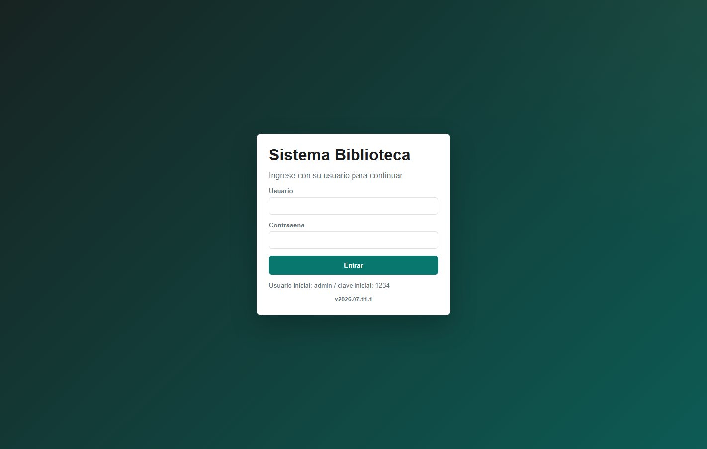
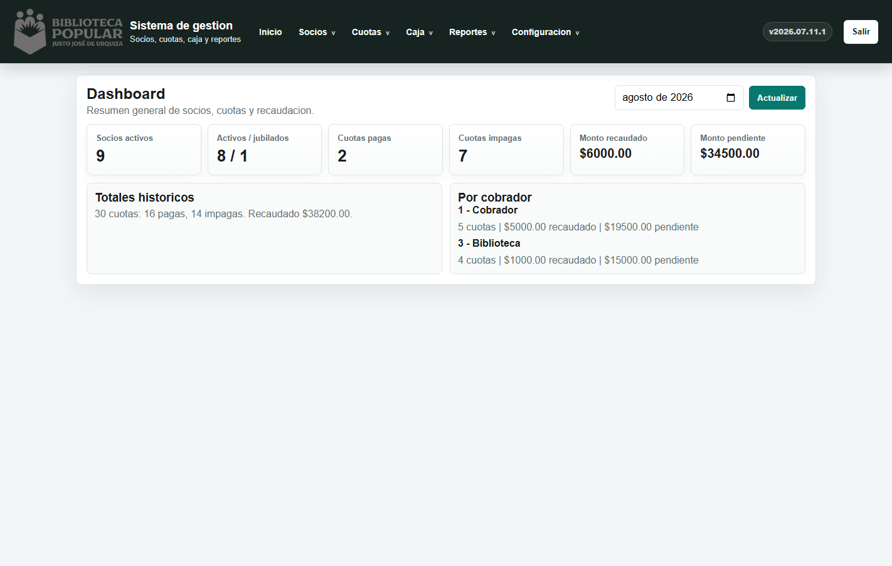
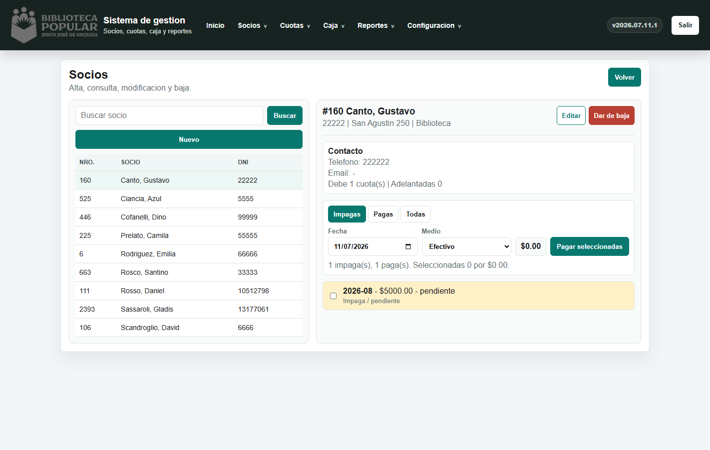
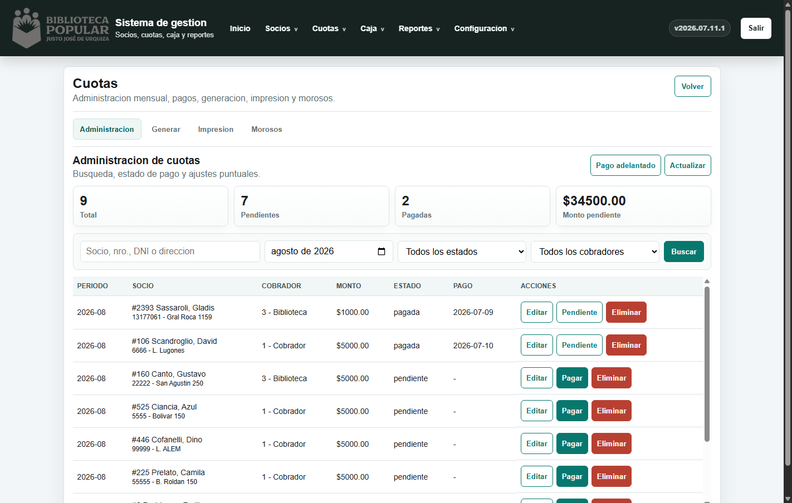
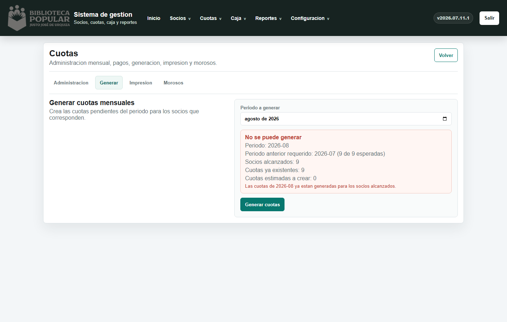
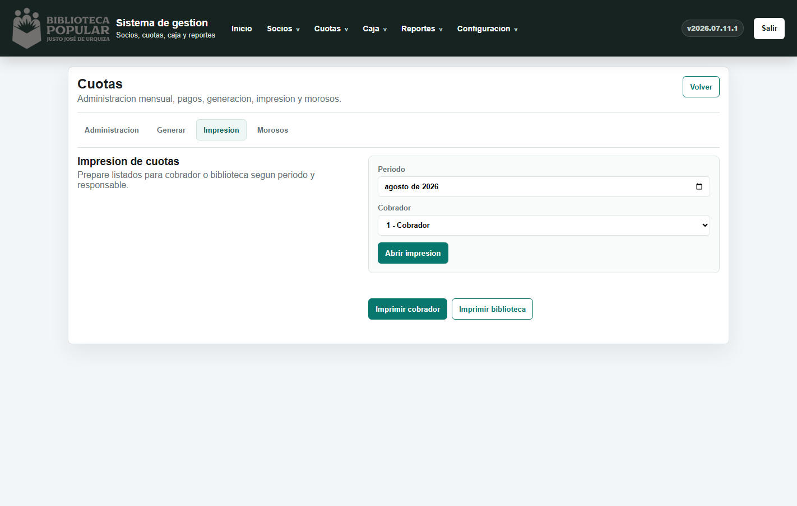
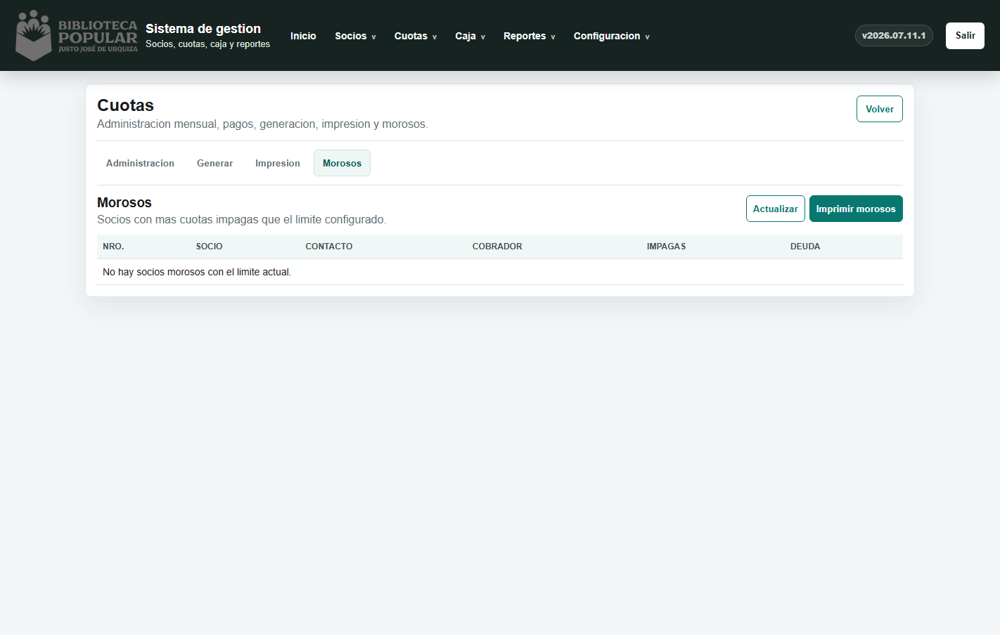
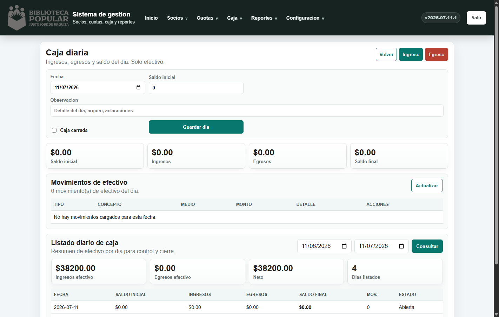
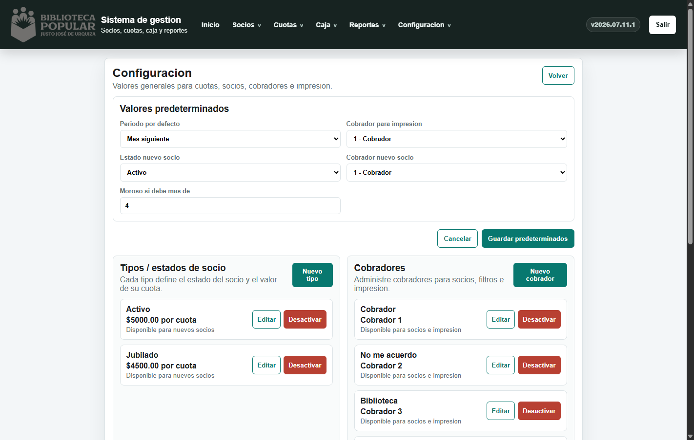

1. Ingreso al sistema
Para entrar se debe ingresar usuario y contrasena.

Recomendacion: actualizar periodicamente la contrasena desde Configuracion > Seguridad.
2. Pantalla principal

El dashboard resume socios activos, cuotas pagas e impagas, monto recaudado, monto pendiente, totales historicos y recaudacion por cobrador.
La version visible en el menu permite confirmar si la web esta actualizada.
3. Flujo diario recomendado: cobrar cuotas
Ruta recomendada: Socios > Listado.

- Buscar el socio por nombre, apellido, DNI o numero de socio.
- Hacer click sobre el socio.
- Usar los filtros
Impagas,PagasoTodas. - Tildar las cuotas que el socio quiere pagar.
- Indicar fecha y medio de pago.
- Presionar
Pagar seleccionadas.
Solo el medio Efectivo mueve caja diaria. Transferencia, tarjeta, cheque u otro medio no generan movimiento de caja.
4. Administracion de cuotas
Ruta: Cuotas > Administracion.

Esta pantalla sirve para buscar, revisar y corregir cuotas por socio, periodo, estado o cobrador.
Pagar: marca una cuota pendiente como pagada.Editar: modifica una cuota puntual.Pendiente: vuelve una cuota pagada a pendiente, con clave de administrador.Eliminar: borra una cuota, con clave de administrador.
Para cobros normales del mostrador conviene usar Socios > Listado.
5. Pago adelantado
Se usa cuando un socio quiere abonar cuotas futuras que todavia no fueron generadas en la operatoria mensual.
- Ir a
Cuotas > Pago adelantado. - Buscar el socio.
- Elegir desde que periodo comienza el adelanto.
- Indicar cantidad de meses, fecha y medio de pago.
- Confirmar con
Generar y pagar.
Si una cuota del rango ya esta pagada, el sistema bloquea la operacion para evitar doble cobro.
6. Generacion mensual de cuotas
Ruta: Cuotas > Generar cuotas. Esta operatoria se realiza una vez por mes.

- Elegir el periodo a generar.
- Revisar el control previo.
- Si el sistema indica que se puede generar, presionar
Generar cuotas. - Confirmar la operacion.
El sistema no permite generar un mes si el mes anterior no esta completo y no duplica cuotas ya generadas.
7. Impresion de cuotas
Ruta: Cuotas > Impresion.

Elegir periodo y cobrador, luego presionar Abrir impresion.
Los socios morosos no salen en la impresion normal de cuotas; tienen su listado separado.
8. Morosos
Ruta: Cuotas > Morosos.

Muestra socios que superan el limite de cuotas impagas configurado. Permite revisar deuda e imprimir listado.
9. Caja diaria
Ruta: Caja > Caja diaria.

La caja diaria registra solamente movimientos en efectivo.
- Los cobros en efectivo de cuotas generan ingreso automatico.
- Pagos por transferencia, tarjeta, cheque u otro medio no se registran en caja.
- Si una caja esta cerrada, modificarla requiere clave de administrador.
10. Configuracion
Ruta: Configuracion > General.

Desde aqui se administran periodo por defecto, cobrador por defecto, estado inicial del socio, limite de morosos, tipos de socio, valores de cuota, cobradores, seguridad y auditoria.
11. Seguridad y buenas practicas
El sistema tiene usuario y contrasena para ingresar, y clave de administrador para acciones delicadas.
- Dar de baja socios.
- Eliminar cuotas.
- Volver cuotas pagadas a pendientes.
- Editar o eliminar movimientos de caja.
- Modificar caja cerrada.
- Cambiar configuracion sensible.
Operatoria diaria
Usar Socios > Listado, buscar socio, ver impagas, tildar cuotas y cobrar.
Operatoria mensual
Usar Cuotas > Generar cuotas, revisar el periodo y confirmar generacion.
Control de caja
Usar Caja > Caja diaria, revisar movimientos y comparar el saldo final con efectivo real.